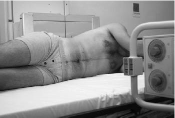

Abdomen(AP Lateral Decubitus)
Centering point:CR perpendicular to IR
Centre to midcoronal plane - 5cm above iliac crest

Cassette Size:35cm x 43cm (14 x 17 ins)
Potrait
Exposure Factors:85kVp on
40MaS
FFD:100cm
Bucky/Grid:Moving or Stationary Grid
Filter:No
Collimation:Collimate closely to upper and lower abdomen soft tissue borders
Close collimation is needed because of the increased scatter and the need for soft tissue visibility
Pathologies:Abnormal soft tissue masses, umbilical hernia, aneurysm of aorta, calcification of vessels
Position of patient and cassette
- Suspended on expiration - this lifts the diaphragm and presents the abdominal contents in a more relaxed state. (check your departmental technique protocol)
- Patient lateral recumbent position (laying on their side)
- Make sure there is no rotation of the torso
- Ensure there are no artefacts, such as zips or buttons over the area being imaged
- CR perpendicular to IR
- Centre to midcoronal plane - 5cm above iliac crest